- 부족한 데이터는 기존 분포를 반영해 만들 수 있습니다.
- 마르코프 체인 몬테카를로(MCMC) 방법의 일종인 깁스 샘플링(Gibbs Sampling)을 사용합시다.
- matplotlib 3.4. 버전에서 추가된
subfigure와subplot_mosaic기능도 실습해보고, - matplotlib을 이용해 3D plot 애니메이션도 만들어 봅니다.
contributor
장령우님: 조건부확률 implementation 관련 조언 제공
배수민님: Gibbs Sampling module 공동 개발
안수빈님: 원본과 Gibbs Sampling 구분 시각화 아이디어 제공
1. Gibbs Sampling
ratsgo’s blog: Gibbs Sampling
Sampling distributions with an emphasis on Gibbs sampling, practicals and code
Gibbs Sampling
- Gibbs Sampling은 기존 데이터의 분포를 재현하는 마르코프 체인 몬테카를로(MCMC: Markov-Chain Monte Carlo)방식의 일환입니다.

- 위 그림처럼 $p(X, Y)$로 표현되는 다변수함수를 모사한다고 합시다.
- $X$와 $Y$의 상관관계는 조건부 확률 $p(X|Y)$과 $p(Y|X)$로부터 구할 수 있습니다.
- 시작점 $(X_0, Y_0)$을 지정하고,
- $p(X|Y_0)$로부터 다음 데이터의 $X$인 $X_1$을 랜덤으로 추출,
- $p(Y|X_1)$로부터 다음 데이터의 $Y$인 $Y_1$을 랜덤으로 추출합니다.
- 이렇게 구한 $(X_1, Y_1)$로부터 같은 방법으로 $(X_2, Y_2)$를 구한 뒤
- 이 작업을 n번 반복해서 $(X_n, Y_n)$을 구합니다.
- 시작점 $(X_0, Y_0)$을 지정하고,
- 이 작업을 영상으로 표현하면 다음과 같습니다.

- N차원 데이터라면 $(X_{0,N}, X_{1,N}, X_{2,N}, \ldots , X_{n,N})$에 대해 적용합니다.
- 조건부 확률을 구하기 위해서 확률분포가 수식으로 주어지거나 공분산을 알 수 있으면 좋습니다.
- 하지만 많은 경우 공간상에 흩뿌려져있기 때문에, 이를 해결하고자 맡바닥부터 코딩을 해봤습니다.
- 소스코드는 여기에서 받을 수 있습니다.
- 하지만 아직 충분히 테스트가 이루어지지 않았기 때문에 다운로드를 권하지는 않습니다.
- 정리되면 pypi를 통해 공개하고자 합니다.
2. Discrete Data
매개변수 t를 이용해서 불균일한 예제 데이터를 만듭니다.
1
2
3
4
5
6
7
8
9
10
11
12
13
14
15
16
17
18
19
20
21
22
23
24%matplotlib inline
import numpy as np
import pandas as pd
import matplotlib.pyplot as plt
import seaborn as sns
from scipy.stats import pearsonr
# normal distribution - scatter plot
t = np.power(np.linspace(0, 10, 1000), 2)
x = t + np.random.normal(size=1000)
y = 10*np.sin(t/30) + np.random.normal(size=1000)
# pearson coefficient
pcc, pv = pearsonr(x,y)
fig, ax = plt.subplots(figsize=(5, 5))
ax.scatter(x, y, c="w", ec="gray", alpha=0.5)
ax.text(0.6, 0.3, f"pcc = {pcc:0.3f}\np-value = {pv:0.3f}", transform=ax.transAxes,
fontsize=14, va="top", ha="right")
fig.set_facecolor("w")
fig.savefig("69_gs_1.png")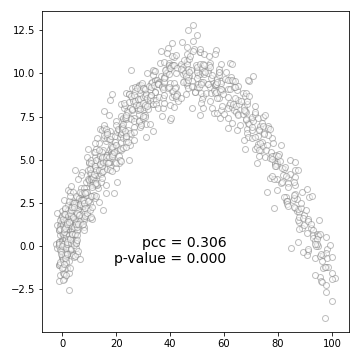
데이터가 왼쪽에 몰려있지만 scatter plot으로는 잘 보이지 않습니다.
matplotlib의
hist2d()명령으로 2D histogram을 그립니다.1
2
3fig, ax = plt.subplots(figsize=(5, 5))
ax.hist2d(x, y, cmap="Greys", bins=20)
fig.savefig("69_gs_2.png")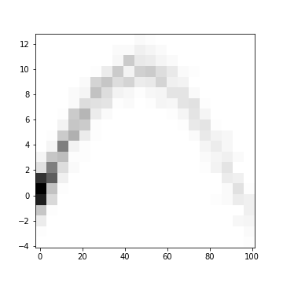
그림 뿐 아니라 히스토그램의 구간과 데이터 수를 구하고 싶다면 이렇게 할 수도 있습니다.
numpy.histogramdd()를 사용해 데이터를 분할하고 이미지를 출력하는imshow()로 그림을 그립니다.x와 y 범위를 index가 아닌 데이터 값으로 표현하기 위해 extent 매개변수를 사용합니다.
1
2
3
4
5
6
7
8
9
10
11xy_H, xy_edges = np.histogramdd((x, y), bins=20)
fig, ax = plt.subplots(figsize=(5, 5))
ax.imshow(xy_H.T, cmap="Greys",
extent=[xy_edges[0][0], xy_edges[0][-1], xy_edges[1][-1], xy_edges[1][0]])
ax.invert_yaxis()
ax.set_aspect(5)
fig.set_facecolor("w")
fig.tight_layout()
fig.savefig("69_gs_3.png")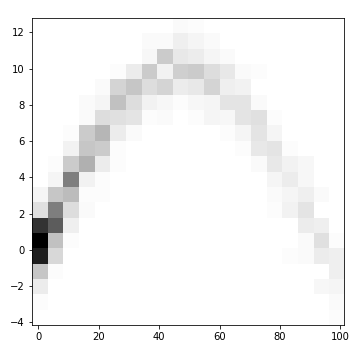
3. matplotlib: Subplot Mosaic
matplotlib tutorials: Complex and semantic figure composition
matplotlib: what’s new in Matplotlib 3.4.0
Pega Devlog: Seaborn with Matplotlib (2)
- 특정 지점에서의 $P(X|Y_0)$와 $P(Y|X_0)$를 도시합니다.
- seabron의 jointplot과 유사한 그림을 matplotlib으로 그려보겠습니다.
기존 기능만 사용해도 그릴 수 있지만 matplotlib 3.4 버전에 새로 도입된
subplot_mosaic()를 사용합니다.subplot_mosaic()는 기존 방법과 달리 axes가 dictionary 형식으로 관리되기 때문에 이름으로 부를 수 있습니다.단순 나열 데이터가 아닌, 위치별로 기능이 다를때 유용합니다.
2차원 리스트로 모양을 잡아주고, empty_sentinel 매개변수로 비울 영역을 지정합니다.
원래 있던 기능인 gridspec_kw를 사용하면 크기 비율을 지정할 수 있습니다.
1
2
3
4
5
6
7
8fig = plt.figure(figsize=(5, 5), constrained_layout=True)
axd = fig.subplot_mosaic(
[["dist_x", "BLANK"],
["hist2d", "dist_y"]],
empty_sentinel="BLANK",
gridspec_kw={"height_ratios": [1, 5], "width_ratios": [5, 1]})
fig.savefig("69_gs_4.png")히스토그램으로 데이터 밀도가 가장 높은 지점을 찾습니다.
1
2
3
4
5
6
7
8
9# index
argmax_x, argmax_y = np.unravel_index(np.argmax(xy_H, axis=None), xy_H.shape)
print(f"index of maxmum count: ({argmax_x}, {argmax_y})")
# coordinate
bin_delta_xhalf = (xy_edges[0][1] - xy_edges[0][0])/2
bin_delta_yhalf = (xy_edges[1][1] - xy_edges[1][0])/2
x_coord = xy_edges[0][argmax_x] + bin_delta_xhalf
y_coord = xy_edges[1][argmax_y] + bin_delta_yhalf- 실행 결과:
1
index of maxmum count: (0, 4)
- 실행 결과:
“hist2d”에 2D 히스토그램을 그리고 데이터 밀도가 가장 높은 지점에 가로세로 선을 긋습니다.
“dist_x”, “dist_y”에 각기 $P(X|Y_0)$와 $P(Y|X_0)$를 히스토그램으로 표현합니다.
1
2
3
4
5
6
7
8
9
10
11
12
13
14
15
16
17
18
19
20
21
22
23
24
25
26
27
28
29
30
31fig = plt.figure(figsize=(5, 5), constrained_layout=True)
axd = fig.subplot_mosaic(
[["dist_x", "BLANK"], ["hist2d", "dist_y"]],
empty_sentinel="BLANK",
gridspec_kw={"height_ratios": [1, 5], "width_ratios": [5, 1]})
# hist2d
y_pos = y_coord
axd["hist2d"].hist2d(x, y, cmap="Greys", bins=20)
axd["hist2d"].axhline(y_coord, c="r", alpha=0.5)
axd["hist2d"].axvline(x_coord, c="b", alpha=0.5)
axd["hist2d"].scatter(x_coord, y_coord, c="w", ec="k", s=50)
# kdeplot (dist_x)
sns.histplot(x[np.where((y < y_coord+bin_delta_yhalf) & (y > y_coord-bin_delta_yhalf))],
color="r", fill=True, bins=xy_edges[0], ax=axd["dist_x"])
axd["dist_x"].spines[["top", "left", "right"]].set_visible(False)
axd["dist_x"].set_xlim(axd["hist2d"].get_xlim())
axd["dist_x"].set_xticklabels([])
axd["dist_x"].set_ylabel("")
# kdeplot (dist_y)
sns.histplot(y=y[np.where((x < x_coord+bin_delta_xhalf) & (x > x_coord-bin_delta_xhalf))],
color="b", fill=True, bins=xy_edges[1], ax=axd["dist_y"])
axd["dist_y"].spines[["top", "bottom", "right"]].set_visible(False)
axd["dist_y"].set_ylim(axd["hist2d"].get_ylim())
axd["dist_y"].set_yticklabels([])
axd["dist_y"].set_xlabel("")
fig.set_facecolor("w")
fig.savefig("69_gs_5.png")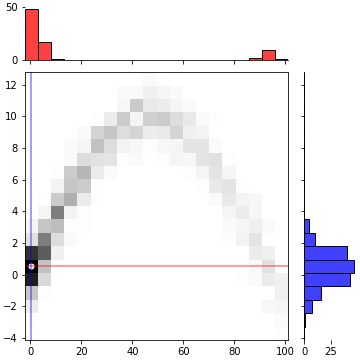
이번에 만든 코드에서는 이 지점을 시작으로 Gibbs Sampling을 수행합니다.
조건부 확률은 N-Dimensional 히스토그램으로부터 계산합니다.
Gibbs Sampling 수행 과정은 이 글에서는 생략하겠습니다.
4. Gibbs Sampling for 2-Dimensional Data
- 모듈을 import하고 기본 데이터를 넣습니다.
1
2
3
4
5
6
7
8
9
10
11
12
13
14
15from gibbs_sampling import GibbsSampling
# pandas DataFrame 형식으로 입력받습니다.
df_xy = pd.DataFrame({"x":x, "y":y})
# 데이터가 분포한 모든 차원을 20개의 구간으로 나누고,
# 1만개의 데이터를 생성하겠다고 선언합니다.
gibbs = GibbsSampling(10000, df_xy, 20)
# 데이터를 생성합니다.
gibbs_xy = gibbs.sampling()
print(f"# type: {type(gibbs_xy)}")
print(f"# shape: {gibbs_xy.shape}")
gibbs_x = gibbs_xy[0]
gibbs_y = gibbs_xy[1]- 실행 결과: (2, 10000)의
numpy.ndarray가 생성됩니다.1
2# type: <class 'numpy.ndarray'>
# shape: (2, 10000)
- 실행 결과: (2, 10000)의
5. matplotlib: subfigure
- matplotlib 버전 3.4에서는 figure 속의 figure, subfigure를 지원합니다.
- figure와 axes로 나뉘어 있던 구획에서 figure와 axes 사이에 위치하는 단계입니다.
- axes를 원하는 대로 배치하기 좋고, 특정 구역에만 배경색을 깔기도 좋습니다.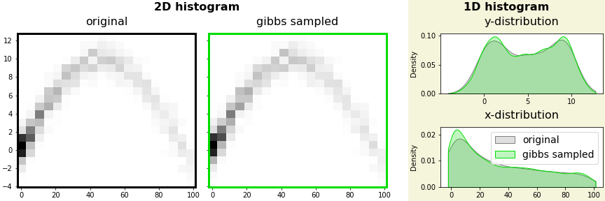
1
2
3
4
5
6
7
8
9
10
11
12
13
14
15
16
17
18
19
20
21
22
23
24
25
26
27
28
29
30
31
32
33
34
35
36
37
38
39### figure 생성
fig = plt.figure(figsize=(12, 4), constrained_layout=True)
## 1행 2열 subfigures 생성
sfigs = fig.subfigures(1, 2, width_ratios=[2, 1], wspace=0.05)
# left subfigure: 원본과 gibbs sampled data의 2D histogram
sfigs[0].suptitle("2D histogram", fontsize=16, fontweight="bold")
# left subfigure 소속 axes
axsL = sfigs[0].subplots(ncols=2, nrows=1, sharex=True, sharey=True)
axsL[0].hist2d(x, y, cmap="Greys", bins=20) # original
axsL[1].hist2d(gibbs_x, gibbs_y, cmap="Greens", bins=20) # gibbs sampled
font_title = {"fontsize":16}
axsL[0].set_title("original", fontdict=font_title, pad=12)
axsL[1].set_title("gibbs sampled", fontdict=font_title, pad=12)
# Gibbs Sampled 그림 spines 색상 변경
axsL[1].spines[["left", "right", "top", "bottom"]].set_color("#00DD00")
# right subfigure: 전체 데이터의 x, y방향 분포
sfigs[1].suptitle("1D histogram", fontsize=16, fontweight="bold")
sfigs[1].set_facecolor("beige") # 오른쪽 subfigure에만 배경색 적용
# right subfigure 소속 axes
axsR = sfigs[1].subplots(ncols=1, nrows=2, squeeze=True)
axsR[1].set_title("x-distribution", fontdict=font_title, pad=12)
sns.kdeplot(x, color="gray", fill=True, cut=0, ax=axsR[1], label="original")
sns.kdeplot(gibbs_x, color="#00DD00", fill=True, cut=0, ax=axsR[1], label="gibbs sampled")
axsR[1].legend(fontsize=14)
axsR[0].set_title("y-distribution", fontdict=font_title, pad=12)
sns.kdeplot(y, color="gray", fill=True, cut=0, ax=axsR[0])
sns.kdeplot(gibbs_y, color="green", fill=True, cut=0, ax=axsR[0])
fig.set_facecolor("w")
fig.savefig("69_gs_6.png")
한번 저장된 원본 데이터의 정보를 이용해 반복 생성이 가능합니다.
생성 데이터 수에 따른 분포를 확인합니다.
1
2
3
4
5
6
7
8
9
10
11
12
13
14
15
16
17
18
19
20
21
22
23
24
25
26
27
28
29
30
31
32
33
34
35
36
37
38
39
40
41
42
43fig = plt.figure(figsize=(12, 9), constrained_layout=True)
sfigs = fig.subfigures(1, 2, width_ratios=[2, 1], wspace=0.05)
# 2D histogram
sfigs[0].suptitle("2D histogram", fontsize=16, fontweight="bold")
axesL = sfigs[0].subplots(ncols=2, nrows=2, sharex=True, sharey=True)
axsL = axesL.ravel()
axsL[0].hist2d(x, y, cmap="Greys", bins=20) # original
axsL[1].hist2d(gibbs_x1, gibbs_y1, cmap="Greys", bins=20) # gibbs sampled1
axsL[2].hist2d(gibbs_x2, gibbs_y2, cmap="Greys", bins=20) # gibbs sampled2
axsL[3].hist2d(gibbs_x3, gibbs_y3, cmap="Greys", bins=20) # gibbs sampled3
font_title = {"fontsize":16}
axsL[0].set_title("original", fontdict=font_title, pad=12)
axsL[1].set_title("gibbs sampled (100)", fontdict=font_title, pad=12)
axsL[2].set_title("gibbs sampled (1000)", fontdict=font_title, pad=12)
axsL[3].set_title("gibbs sampled (10000)", fontdict=font_title, pad=12)
for ax, scolor in zip(axsL, ["k", "#D00", "#0D0", "#00D"]):
ax.spines[["left", "right", "top", "bottom"]].set_color(scolor)
ax.spines[["left", "right", "top", "bottom"]].set_linewidth(3)
# 1D histogram
sfigs[1].suptitle("1D histogram", fontsize=16, fontweight="bold")
sfigs[1].set_facecolor("beige")
axsR = sfigs[1].subplots(ncols=1, nrows=2, squeeze=True)
axsR[1].set_title("x-distribution", fontdict=font_title, pad=12)
sns.kdeplot(x, color="k", linewidth=3, fill=False, cut=0, ax=axsR[1], zorder=2, label="original")
sns.kdeplot(gibbs_x1, color="red", fill=True, cut=0, ax=axsR[1], label="sampled (100)")
sns.kdeplot(gibbs_x2, color="green", fill=True, cut=0, ax=axsR[1], label="sampled (1000)")
sns.kdeplot(gibbs_x3, color="blue", fill=True, cut=0, ax=axsR[1], label="sampled (10000)")
axsR[1].legend(fontsize=14)
axsR[0].set_title("y-distribution", fontdict=font_title, pad=12)
sns.kdeplot(y, color="k", linewidth=3, fill=False, cut=0, ax=axsR[0], zorder=2)
sns.kdeplot(gibbs_y1, color="red", fill=True, cut=0, ax=axsR[0])
sns.kdeplot(gibbs_y2, color="green", fill=True, cut=0, ax=axsR[0])
sns.kdeplot(gibbs_y3, color="blue", fill=True, cut=0, ax=axsR[0])
fig.set_facecolor("w")
fig.savefig("69_gs_7.png")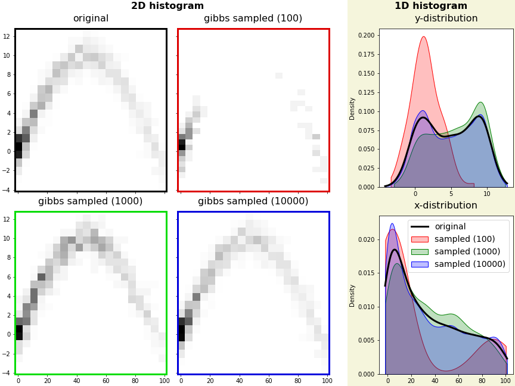
원본 데이터는 1000개로 구성되어 있습니다.
한참 못미치는 100개는 원본 데이터의 분포와 많이 어긋나는 것을 알 수 있습니다.
1000개와 10000개를 생성하면 원본 데이터와 상당히 유사한 분포를 재현할 수 있습니다.
하지만 데이터가 많다고 항상 원본에 더 근접한 것은 아니지만 신뢰할만한 수준의 분포를 얻을 수 있었습니다.
6. Gibbs Sampling의 한계: 분리된 데이터
Gibbs Sampling은 조건부 확률을 사용해 데이터를 생성합니다.
따라서 데이터가 섬처럼 끊겨 있는 경우에는 그 지점을 생성할 수 없습니다.
제 코드에서는 이 점을 보완하기 위해 생성할 데이터의 수를 kfold로 나누어 일부를 생성한 뒤,
앞으로 생성해야 할 데이터 기준으로 조건부 확률과 시작점을 업데이트하도록 했습니다.1
2
3
4
5
6
7
8
9
10
11
12
13
14
15
16# 분리 데이터 생성
sx1 = np.random.normal(loc=0, size=1000)
sy1 = np.random.normal(loc=0, size=1000)
sx2 = np.random.normal(loc=10, size=1000)
sy2 = np.random.normal(loc=10, size=1000)
# 데이터 결합
sx = np.concatenate([sx1, sx2])
sy = np.concatenate([sy1, sy2])
# scatter plot 시각화
fig, ax = plt.subplots(figsize=(5, 5))
ax.scatter(sx, sy, c="lightgray", ec="gray", alpha=0.5)
fig.set_facecolor("w")
fig.savefig("69_gs_8.png")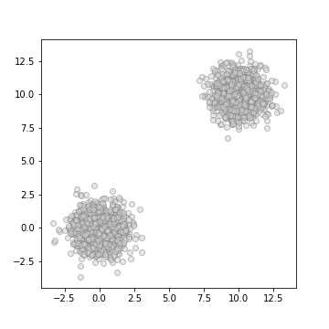
kfold를 1, 3, 5로 나누어 영향을 확인합니다.
1
2
3
4
5
6df_sep = pd.DataFrame({"x": sx, "y": sy})
gibbs_sep = GibbsSampling(10000, df_sep, 30)
gibbs_sx1, gibbs_sy1 = gibbs_sep.sampling(kfold=1)
gibbs_sx2, gibbs_sy2 = gibbs_sep.sampling(kfold=3)
gibbs_sx3, gibbs_sy3 = gibbs_sep.sampling(kfold=5)시각화 코드는 반복이 많아 숨겨둡니다. 클릭하면 펼쳐집니다.
kfold가 1일 때는 한 그룹의 데이터만 생성된 것을 볼 수 있습니다.
코드 보기/접기
1
2
3
4
5
6
7
8
9
10
11
12
13
14
15
16
17
18
19
20
21
22
23
24
25
26
27
28
29
30
31
32
33
34
35
36
37
38
39
40
41
42fig = plt.figure(figsize=(12, 9), constrained_layout=True)
sfigs = fig.subfigures(1, 2, width_ratios=[2, 1], wspace=0.05)
# 2D histogram
sfigs[0].suptitle("2D histogram", fontsize=16, fontweight="bold")
axesL = sfigs[0].subplots(ncols=2, nrows=2, sharex=True, sharey=True)
axsL = axesL.ravel()
axsL[0].hist2d(sx, sy, cmap="Greys", bins=20) # original
axsL[1].hist2d(gibbs_sx1, gibbs_sy1, cmap="Greys", bins=20) # gibbs sampled1
axsL[2].hist2d(gibbs_sx2, gibbs_sy2, cmap="Greys", bins=20) # gibbs sampled2
axsL[3].hist2d(gibbs_sx3, gibbs_sy3, cmap="Greys", bins=20) # gibbs sampled3
font_title = {"fontsize":16}
axsL[0].set_title("original", fontdict=font_title, pad=12)
axsL[1].set_title("gibbs sampled (kfold=1)", fontdict=font_title, pad=12)
axsL[2].set_title("gibbs sampled (kfold=3)", fontdict=font_title, pad=12)
axsL[3].set_title("gibbs sampled (kfold=5)", fontdict=font_title, pad=12)
for ax, scolor in zip(axsL, ["k", "#D00", "#0D0", "#00D"]):
ax.spines[["left", "right", "top", "bottom"]].set_color(scolor)
ax.spines[["left", "right", "top", "bottom"]].set_linewidth(3)
# 1D histogram
sfigs[1].suptitle("1D histogram", fontsize=16, fontweight="bold")
axsR = sfigs[1].subplots(ncols=1, nrows=2, squeeze=True)
axsR[1].set_title("x-distribution", fontdict=font_title, pad=12)
sns.kdeplot(sx, color="k", linewidth=3, fill=False, cut=0, ax=axsR[1], zorder=2, label="original")
sns.kdeplot(gibbs_sx1, color="red", fill=True, cut=0, ax=axsR[1], label="sampled (kfold=1)")
sns.kdeplot(gibbs_sx2, color="green", fill=True, cut=0, ax=axsR[1], label="sampled (kfold=3)")
sns.kdeplot(gibbs_sx3, color="blue", fill=True, cut=0, ax=axsR[1], label="sampled (kfold=5)")
axsR[1].legend(fontsize=14)
axsR[0].set_title("y-distribution", fontdict=font_title, pad=12)
sns.kdeplot(sy, color="k", linewidth=3, fill=False, cut=0, ax=axsR[0], zorder=2)
sns.kdeplot(gibbs_sy1, color="red", fill=True, cut=0, ax=axsR[0])
sns.kdeplot(gibbs_sy2, color="green", fill=True, cut=0, ax=axsR[0])
sns.kdeplot(gibbs_sy3, color="blue", fill=True, cut=0, ax=axsR[0])
fig.set_facecolor("w")
fig.savefig("69_gs_19.png")
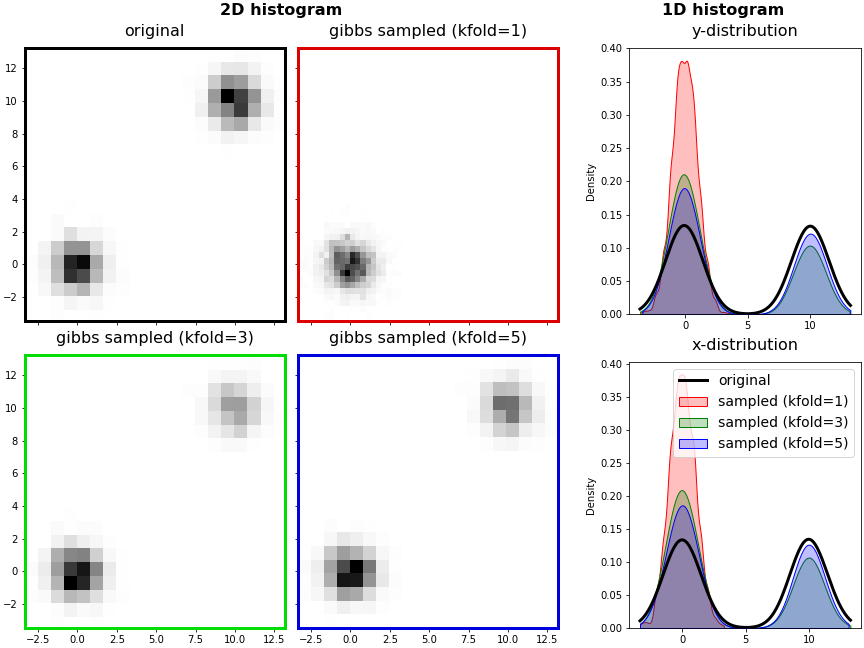
7. 부가 기능
- 활용성을 높이기 위해 몇 가지 부가 기능을 내장하고 있습니다.
7.1. 생성데이터 저장
- 생성된 데이터를
pandas.DataFrame으로 저장할 수 있습니다. .to_df()명령이며, 기본적으로 pickle(.pkl)로 저장하지만 파일 이름에.csv를 명시하면 csv 형식으로 저장됩니다.1
2gibbs1D = GibbsSampling(10000, x, bins=30)
gibbs1D.to_df("gibbs1D")- 실행 결과
1
2# (default) exporting as pickle
# Sampling data export complete: gibbs1D.pkl
- 실행 결과
7.2. 데이터 시각화 (1D)
- 원본과 생성된 데이터를 한 눈에 보는 기능을 제공합니다.
plot()을 사용합니다. filename 매개변수를 사용하면 저장도 됩니다.- 1D data로 간단히 확인해보겠습니다.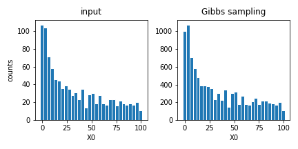
1
gibbs1D.plot(filename="gibbs1D_plot.png")
7.3. 파일 입력
- 데이터 파일로부터 직접 데이터를 생성할 수 있습니다.
- GibbsSampling() 명령의 데이터 자리에 파일명을 대신 넣으면 됩니다.
- 방금 저장한 데이터를 읽어서 10개의 구간으로 샘플링한 후 함께 그려보겠습니다.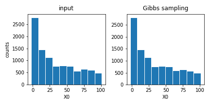
1
2gibbs1D_2nd = GibbsSampling(10000, "gibbs1D.pkl", bins=10)
gibbs1D_2nd.plot(filename="gibbs1D_input.png")
7.4. N-Dimensional Gibbs Sampling 시각화
1차원 데이터는 좌우에 나란히 보여주기 좋지만, 차원이 커지면 시각화가 어려워집니다.
이런 점을 보완하기 위해 2차원 이상의 시각화는 2D 히스토그램을 여럿 활용합니다.
ori=True를 하면 원본 데이터가, False(기본값)로 놓으면 생성된 데이터가 그려집니다.1
2
3
4
5
6
7
8
9
10
11
12# 3차원 데이터를 만들고
z = 10*np.log(t+1) + np.random.normal(size=1000)
df_3d = pd.DataFrame({"x":x, "y":y, "z":z})
# 데이터를 생성합니다.
# 인자별로 구간의 수를 조절할 수 있습니다. 메모리 문제를 해결하고자 넣었습니다.
gibbs_3d = GibbsSampling(3000, df_3d, bins=[20, 30, 40])
# 데이터를 시각화합니다.
# figsize 매개변수로 그림 크기를 지정할 수 있습니다.
# 원본 데이터를 먼저 그립니다.
gibbs_3d.plot(cmap="Greys", figsize=(8, 8), org=True, filename="69_gs_9.png")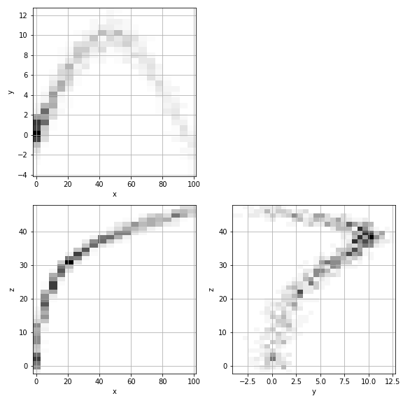
생성 데이터도 그려봅니다.
GibbsSampling의
plot()메소드는 fig를 return 하기 때문에 추가 처리도 가능합니다.1
2
3
4fig = gibbs_3d.plot(cmap="Greys", figsize=(8, 8), org=False, filename="69_gs_10.png")
fig.set_facecolor("#DDF")
fig.savefig("69_gs_10.png")
display(fig)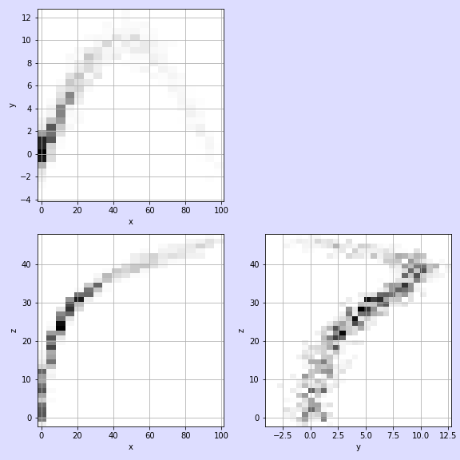
8. Matplotlib: 3D Rotation Animation
- 3차원 공간을 2차원에 표현하는데는 한계가 있습니다.
- 3차원으로 그려도 시선 방향으로 정사영(projection)한 그림밖에 보이지 않습니다.
- 이럴 때 interactive와 함께 좋은 방법은 그림을 빙빙 돌리며 애니메이션으로 보는 것입니다.
- matplotlib의
FuncAnimation을 활용합니다. - 사용자 정의한
animate()함수 안에 frame마다 달라지는 그림을 iteration 매개변수 i를 사용해 그립니다. - return 값에 쉼표(,)를 붙여서 tuple 형태로 바꿔줘야 한다는 점을 주의해야 합니다.
1
2
3
4
5
6
7
8
9
10
11
12
13
14
15
16
17
18
19
20
21
22
23from matplotlib import animation
fig, axs = plt.subplots(ncols=2, figsize=(10, 5), constrained_layout=True,
subplot_kw={"projection":"3d"})
def init():
axs[0].scatter(x, y, z, marker='o', s=30, c="w", ec="gray", alpha=0.6)
axs[1].scatter(*gibbs_3d_data, marker='o', s=30, c="w", ec="blue", alpha=0.6)
axs[0].set_title("original", fontsize=16, pad=8)
axs[1].set_title("Gibbs Sampled", fontsize=16, pad=8)
return fig,
def animate(i):
axs[0].view_init(elev=10., azim=i)
axs[1].view_init(elev=10., azim=i)
return fig,
# Animate
anim = animation.FuncAnimation(fig, animate, init_func=init,
frames=360, interval=20, blit=True)
# Save
anim.save('69_gs_11.gif', fps=30)
- 코드는 버그를 확인하고 완성도를 높여 추후 공개하겠습니다.